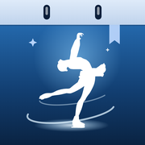

Можно вернуться в приложение
Страница оплаты закрыта. Прошла ли оплата, приложение покажет в Настройках, в разделе «Подписка».

Страница оплаты закрыта. Прошла ли оплата, приложение покажет в Настройках, в разделе «Подписка».